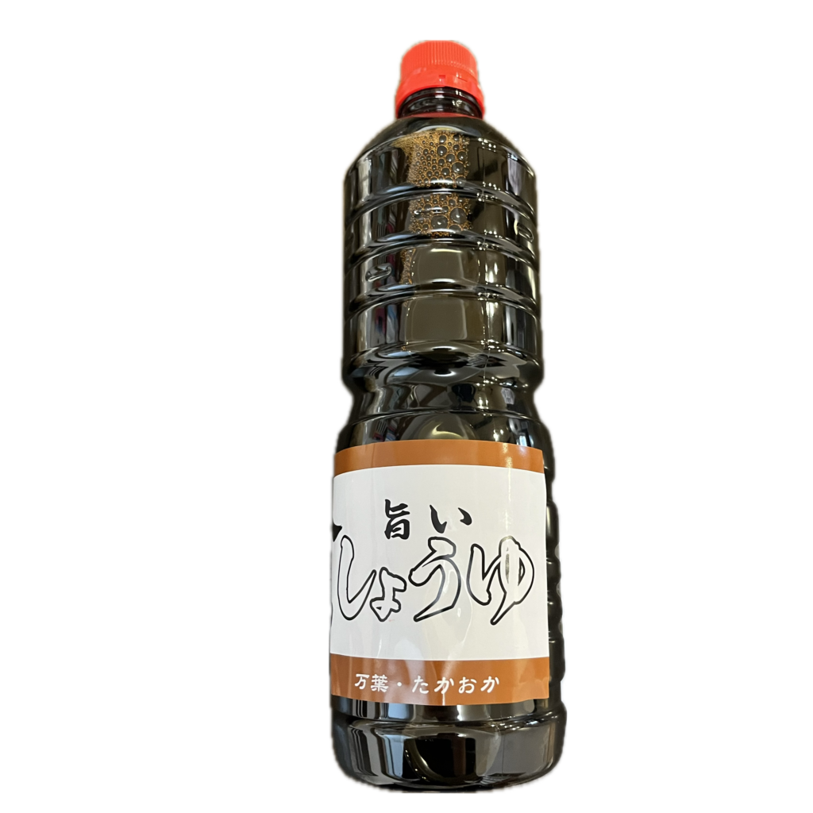

創業110年 伝統の味を守り続ける
富山県産の原材料にこだわり、保存料・添加物不使用の安心・安全な製品をお届けします
私たちについて
創業110年、富山県高岡市で代々続く味噌・麹の専門店です。
昔ながらの製法を守り、手作りにこだわった製品づくりを行っています。
地元富山県産の原材料を使用し、保存料・添加物を使用しない安心・安全な製品をお届けしています。
商品紹介
米麹
長年の経験と技術が生み出す、最高品質の米麹です。
1kg: ¥950
500g: ¥490
味噌
生味噌
1kg: ¥430
500g: ¥240
甘味噌
1kg: ¥650
500g: ¥340
辛口味噌
1kg: ¥650
500g: ¥340

醤油
万葉・たかおか 厳選された原料から作られた風味豊かな醤油です。
1ℓ: ¥350
一升瓶: ¥600
その他の商品
味噌・醤油づくりの原材料も販売しております：
- 北海道産鶴の子大豆1kg880円
- 富山県産オオツル大豆1kg400円
- ほん塩1.2kg250円
- その他の原材料
※在庫状況や価格については、お気軽にお問い合わせください。
ご注文・サービスについて
商品のご注文について
現在、オンラインでの販売は行っておりません。
各種商品のご予約・ご注文は電話にて承っております。
味噌づくり体験
ご家庭での味噌づくりをサポートいたします：
- 味噌づくりキットの販売
- 味噌づくり器具の貸し出し
- 味噌づくり教室の開催
詳しい内容やご予約については、お電話にてお問い合わせください。
イベント出店情報
たかおか朝市
毎月第2・第4日曜日に開催される高岡市の朝市に出店しています。
人気の焼き醤油団子を販売中！


開催時間：午前5時30分～午前8時00分
場所：高岡大仏前通り
その他のイベント出店
地域のイベントにも積極的に参加しています。
各種イベントでも焼き醤油団子を販売！
出店情報はSNS等で発信いたします。